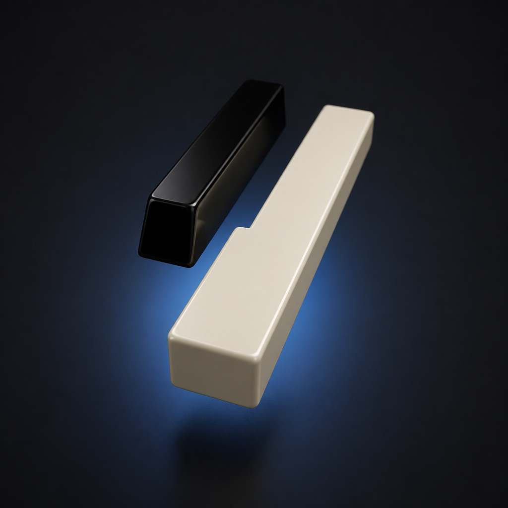

01
Live counting
Watch notes accumulate in a typeface sized for the room. Track notes per second, peak intensity, and elapsed time while you play — then open Focus for a counter that fills the screen.
Peak Notes
A quiet studio for the browser — built for pianists who practice with intention and leave with a take worth keeping.
Watch
A quick look at counting notes, capturing a take, and exporting from the studio — the same flow you’ll use at the bench.
The craft
Scales blur together. Etudes disappear into the evening. Peak Notes turns motion into measure — a live counter, a honest clock, and a record of what your hands actually did. Optimized for USB MIDI pianos and the quiet discipline of daily work.

For the instrument
Plug in a digital piano — Yamaha and friends welcome — and Peak Notes listens over Web MIDI. Sustain pedal holds the room. Velocity keeps the touch. Your computer keyboard waits politely until you invite it in.
Touch
Click any key to begin
Features
Watch notes accumulate in a typeface sized for the room. Track notes per second, peak intensity, and elapsed time while you play — then open Focus for a counter that fills the screen.
Export SMF Format 1 at 480 PPQN — the kind of file Synthesia, DAWs, and notation tools expect. Leading silence trimmed. Held notes closed cleanly. Your take, portable.
Render a 1080p, 60 fps counter video that advances on every note-on. Pauses stay frozen. Style the type. Download an MP4 for reels, lessons, and proof of practice.
Save sessions locally with optional names and notes. Revisit peak NPS, duration, and voice. Clear anytime. Nothing leaves your browser unless you export it.

“Discipline is quiet. Peak Notes simply makes the quiet count.”
Begin
Chrome or Edge for MIDI. Any modern browser for the keyboard. Headphones recommended. Ambition optional — but welcome.
Open Peak Notes